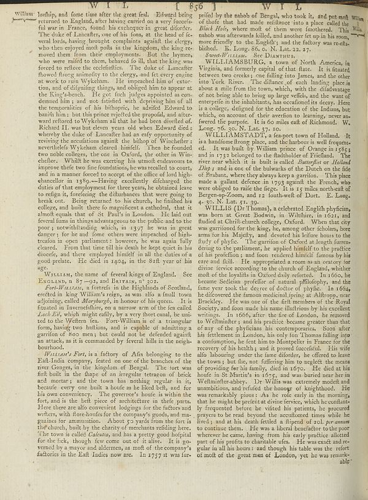

Scan ID britannica:309f765b1ecc83e0a7f7762e44b4a927a7555443:train:258
Image SHA-256 631a7ae7df340a64a33318be0161e911b328ec2b7354754da2dc37a1606ece4c
Status: ok. Running header: none (none). Removed page furniture: none.
PDF · raw Parse reply · LaTeX
Entries: E0012 WILLIAM WILLIAMSBURG WILLIAMSTADT

| # | Class | Box | Parse 3.5 | Used text | Source |
|---|---|---|---|---|---|
| 0 | Text | [0.04, 0.0, 0.5273, 0.5414] | Willant lodhip, and fame time after the great feel. Edward being returned to England, after having carried on a very favouris- ful war in France, found his echterpect is great director. The duke of Lancafter, one of his foons, at the head of feveral lands, having brought complaints against the clergy, who then they enjoyed mail with at the kingston, the day re- moved them from their employments. But the haymen, who were raffled to them, behaved do fil, that the king was forced to reflect the confidence. The idea of Lancathe showed frong animality to the clergy, and fet every engine at work to | lordship, and some time after the great feel. Edward being returned to England, after having carried on a very successful war in France, found his exchequer in great disorder. The duke of Lancaster, one of his sons, at the head of several lords, having brought complaints against the clergy, who then enjoyed most posts in the kingdom, the king removed them from their employments. But the laymen, who were raised to them, behaved so ill, that the king was forced to restore the ecclesiastics. The duke of Lancaster showed strong animosity to the clergy, and set every engine at work to ruin Wykeham. | super_vl |
| 1 | Text | [0.1016, 0.5406, 0.5195, 0.5687] | WILLIN, the name of federal kings of England. See ENOLAND, n 87--01, and BITAIN, n' 302. | WILLIAM, the name of several kings of England. See ENGLAND, n 87-92, and BRITAIN, n 302. | super_vl |
| 2 | Text | [0.1025, 0.5695, 0.5205, 0.7016] | _For-WILLIAMS, referred to the Highlands of Scotland,_ created in bring William's reign, as walls a small town adjoining, called _Maryburg6_, in honour of his queen. It is fixated in herevelthly, on a narrow arm of the les called _Lad Eekl,_ which might really by a very front even the beini-ted to the Wetton tea. For-William is of a triangular form, having two battions, and to capable of admitting a garrition of 800 men, but could not be defended against an attack, as it is commanded by ferternal blisk in the origin-borhood. | Fort-William, a fortress in the Highlands of Scotland, erected in king William's reign, as was also a small town adjoining, called Maryburgh, in honour of his queen. It is situated in Invernesshire, on a narrow arm of the sea called Loch Eil, which might easily, by a very short canal, be united to the Western sea. Fort-William is of a triangular form, having two bastions, and is capable of admitting a garrison of 800 men; but could not be defended against an attack, as it is commanded by several hills in the neighbourhood. | super_vl |
| 3 | Text | [0.1006, 0.7008, 0.5215, 0.9187] | _WILLAN’s Port,_ is a factory of Afin belonging to the East India company, feated on one of the branches of the river Ganges, in the kingdom of Bengal. The tort was first built in the shape of an irregular terrazon of brick and mortar; and the town has nothing regular it is, because every one built a house as he liked beth, and for his or convenience. The governor's house is within the fort, and is the left piece of architecture in their parts. Here there are also convenient lodgings for the factors and writers, with force studies for the company's goods, and magazines or ammunition. About 57 | William's Fort, is a factory of Asia belonging to the East-India company, seated on one of the branches of the river Ganges, in the kingdom of Bengal. The fort was first built in the shape of an irregular tetragon of brick and mortar; and the town has nothing regular in it, because every one built a house as he liked best, and for his own convenience. The governor's house is within the fort, and is the best piece of architecture in those parts. Here there are also convenient lodgings for the factors and writers, with store-houses for the company's goods, and magazines for ammunition. About 50 | super_vl |
| 4 | Text | [0.5342, 0.007, 0.958, 0.1102] | pulled by the nahoof Bengal, who took its, and put met of those that had made resilience into place called the _Blak Hels_, where most of them were foreshored. This nahob was afterwards killed, and another fet up in his room, more friendly to the English, and the factory was re-fits-bilined. To Loneg 86, o. N. Las 22, 27. | prised by the nabob of Bengal, who took it, and put most of those that had made resistance into a place called the Black Hole, where most of them were smothered. This nabob was afterwards killed, and another set up in his room, more friendly to the English; and the factory was re-established. K. Long. 86. o. N. Lat. 22. 27. | super_vl |
| 5 | Text | [0.5352, 0.1164, 0.957, 0.2633] | WILLLAMSBURG, e town of North America, in Virginia, and formerly capital of that fact. It is fuated between two rocks; one falling into James, and the other into York River. The distance of each landing place is about a mile from the town, which, with the chief advantage of not being able to bring large wells, and she want of enterprin in the inhabitants, has occhedinal as decay. Here is a college, designed for the education of the Indians, but which, as account of their services to learning, overau-fered the purple. It is 60 miles east of Richmond. W. Long, 76, 30, N. Las 27, 10. | WILLIAMSBURG, a town of North America, in Virginia, and formerly capital of that state. It is situated between two creeks; one falling into James, and the other into York River. The distance of each landing place is about a mile from the town, which, with the disadvantage of not being able to bring up large vessels, and the want of enterprise in the inhabitants, has occasioned its decay. Here is a college, designed for the education of the Indians, but which, on account of their aversion to learning, never answered the purpose. It is 60 miles east of Richmond. W. Long. 76. 30. N. Lat. 37. 10. | super_vl |
| 6 | Text | [0.5332, 0.2641, 0.9561, 0.4086] | WILLUMSMSTADLY as fees-port town of Holland. It is a handsome frong place, and the harbor is well frequented. It was built by Willimpin price of Oman in 1583 I and in 1733 included to the flashside of Erland. The river near which it is built is called _Butterliot or Holland Day_ , and is one of the bulwals of the Dutch on the life of Pakistan, where they always keep a garrition. This place made a gallant defence in 1759 against the French, who were obliged to take the firege. It is 15 miles northcraft of Bergenea-Zoon, and 12 southwell of Dorte. E. Lang, 4-30, N. Las 51, 39. | WILLIAMSTADT, a sea-port town of Holland. It is a handsome strong place, and the harbour is well frequented. It was built by William prince of Orange in 1585, and in 1732 belonged to the stadtholder of Friesland. The river near which it is built is called Butterdiep or Holland Diep, and is one of the bulwarks of the Dutch on the side of Brabant, where they always keep a garrison. This place made a gallant defence in 1793 against the French, who were obliged to raise the siege. It is 15 miles north-east of Bergen-op-Zoom, and 12 south-west of Dort. E. Long. 4. 30. N. Lat. 51. 39. | super_vl |
| 7 | Text | [0.5322, 0.4094, 0.959, 0.932] | WILLINS (D Thomas), a celebrated English Myckling, was born at Great Bodwin, in WildHere, in 1611, and fludied at Chrift-church college, Oxford. When that city was parturient for the king, the among other scholars, bore must be his Majidity, and devoted his three hours to the flyt of phyfeic. The garrior of Oxford at Leughr furnerdening to the patmanie, he applied himself to the practice of his pacification and foam rendered himself famous by his care and full. He appropriated a room as an contrary for driven revoc according to the church of England, whether end of the loyalists in Oxford only | WILLIS (Dr Thomas), a celebrated English physician, was born at Great Bodwin, in Wiltshire, in 1621, and studied at Christ-church college, Oxford. When that city was garrisoned for the king, he, among other scholars, bore arms for his Majesty, and devoted his leisure hours to the study of physic. The garrison of Oxford at length surrendering to the parliament, he applied himself to the practice of his profession; and soon rendered himself famous by his care and skill. He appropriated a room as an oratory for divine service according to the church of England, whither most of the loyalists in Ox | super_vl |
Britannica scans: National Library of Scotland, CC0 1.0. Wikipedia text: Wikipedia contributors, CC BY-SA 4.0, revision links on each page. Generated 2026-10-18T13:26:14+00:00.